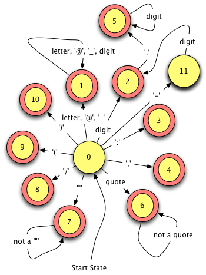

4. Object-Oriented Programming¶
{kind=link}
Fig. 4.1 JCoCo
{kind=link}
Fig. 4.2 The JCoCo Virtual Machine
4.1. The Java Environment¶
1 2 3 4 5 6 | public class HelloWorld {
public static
void main(String args[]) {
System.out.println("Hello World");
}
}
|
Fig. 4.3 Hello World
1 2 3 4 | My Mac> javac HelloWorld.java
My Mac> java HelloWorld
Hello World
My Mac>
|
{kind=link}
Fig. 4.4 The Java Compiler and Virtual Machine
Practice 4.1
Another program is written and compiled. Here is the error message from the compiler. What can you discern from the compile message? Why would this be important to Java?
1 2 3 4 5 6 | test.java:1: error: class Test is public,
should be declared in a file named Test.java
public class Test {
^
1 error
My Mac>
|
4.2. The C++ Environment¶
4.2.1. Example 4.1¶
Fig. 4.5 C++ Compile
Fig. 4.6 hello.cpp
1 2 3 4 | My Computer> g++ hello.cpp
My Computer> a.out
Hello World!
My Computer>
|
Fig. 4.7 compiling hello.cpp
1 2 3 4 | My Computer> g++ -g -o hello hello.cpp
My Computer> hello
Hello World!
My Computer>
|
Fig. 4.8 Include Debug and Name
4.2.2. The Macro Processor¶
4.2.3. The Make Tool¶
PyObject.o: PyObject.cpp PyObect.h
g++ -g -c -std=c++0x PyObject.cpp
coco: main.o PyObject.o PyInt.o PyType.o ....
g++ -o coco -std=c++0x main.o PyObject.o PyInt.o PyType.o ....
./rebuild
./configure
make
Practice 4.2
Using C++ there are no naming requirements for modules and classes like Java. So, when class A uses class Test both class A and class Test can be put into a le by any name. Why is this OK for C++ programs, but not for Java programs?
4.3. Namespaces¶
4.3.1. Example 4.2¶
from iostream import * # merges the namespace with the current module
import iostream # preserves the namespace while importing the module
import java.iostream.cout
1 2 3 4 | #include <iostream>
int main(int argc, char* argv[]) {
std::cout << "Hello World!" << std::endl;
}
|
Fig. 4.9 Namespace std
4.4. Dynamic Linking¶
export CLASSPATH=./DBBrowser/lib/mysql-connector-java-5.1.17-bin.jar:.:$CLASSPATH
import java.io.BufferedInputStream
4.5. Defining the Main Function¶
Practice 4.3
Command-line arguments are typed in after the name of the program. For instance if a program is called grep then you might provide command-line arguments like this.
grep def *.py
Both C++ and Java programs can receive command-line arguments through the main function. With C++ the number of command-line arguments is passed as argc and the actual arguments are passed in the array of strings (i.e. character arrays) in the parameter named argv as declared in figure [namespacestd]. The variable argc is always at least one for C++ programs but the length of the command-line arguments String array in Java may be zero if no command-line arguments are passed. Do you know why?
4.7. Garbage Collection¶
4.8. Threading¶
4.9. The PyToken Class¶
if (tok.getType() != TokenType.PYEOFTOKEN) {
badToken(tok, "Excpected End Of File (EOF)");
}
PyToken t;
t = new PyToken(type, lex, line, column);
package jcoco;
public class PyToken {
public enum TokenType {
PYIDENTIFIERTOKEN,
PYINTEGERTOKEN,
PYFLOATTOKEN,
PYSTRINGTOKEN,
PYKEYWORDTOKEN,
PYCOLONTOKEN,
PYCOMMATOKEN,
PYSLASHTOKEN,
PYLEFTPARENTOKEN,
PYRIGHTPARENTOKEN,
PYEOFTOKEN,
PYBADTOKEN
}
private String lexeme;
private TokenType type;
private int line;
private int col;
public PyToken(TokenType type, String lex, int line, int col) {
this.lexeme = lex;
this.type = type;
this.line = line;
this.col = col;
}
public TokenType getType() {
return this.type;
}
public String getLex() {
return this.lexeme;
}
// See getCol and getLine in the full source code.
}
Fig 4.10 The PyToken class
#include <string>
using namespace std;
class PyToken {
public:
PyToken(int tokenType, string lex, int line, int col);
virtual ~PyToken();
string getLex() const;
int getType() const;
int getCol() const;
int getLine() const;
private:
string lexeme;
int tokenType;
int line;
int column;
};
const int PYIDENTIFIERTOKEN = 1;
const int PYINTEGERTOKEN = 2;
const int PYFLOATTOKEN = 3;
const int PYSTRINGTOKEN = 4;
const int PYKEYWORDTOKEN = 5;
const int PYCOLONTOKEN = 6;
const int PYCOMMATOKEN = 7;
const int PYSLASHTOKEN = 8;
const int PYLEFTPARENTOKEN = 9;
const int PYRIGHTPARENTOKEN = 10;
const int PYEOFTOKEN = 98;
const int PYBADTOKEN = 99;
Fig 4.11 The C++ PyToken class declaration - PyToken.h
#include "PyToken.h" PyToken::PyToken(int tokenType, string lex, int line, int col) { this->lexeme = lex; this->tokenType = tokenType; this->line = line; this->column = col; } PyToken::~PyToken() {} int PyToken::getType() const { return tokenType; } string PyToken::getLex() const { return lexeme; } // getLine and getCol omitted.
Fig 4.12 The C++ PyToken class declaration - PyToken.cpp
4.10. Inheritance and Polymorphism¶
#ifndef PYOBJECT_H_
#define PYOBJECT_H_
#include <string>
#include <unordered_map>
#include <vector>
#include <iostream>
using namespace std;
class PyType;
class PyObject {
public:
PyObject();
virtual ~PyObject();
virtual PyType* getType();
virtual string toString();
PyObject* callMethod(string name, vector<PyObject*>* args);
protected:
unordered_map<string, PyObject* (PyObject::*)(vector<PyObject*>*)> dict;
virtual PyObject* __str__(vector<PyObject*>* args);
virtual PyObject* __type__(vector<PyObject*>* args);
virtual PyObject* __hash__(vector<PyObject*>* args);
virtual PyObject* __repr__(vector<PyObject*>* args);
};
ostream& operator << (ostream& os, PyObject& t);
extern bool verbose;
#endif /* PYOBJECT_H_ */
Fig 4.13 The C++ PyObject header file - PyObject.h
x = [1,2,3]
y = eval(repr(x))
PyObject* PyObject::__str__(vector<PyObject*>* args) {
ostringstream msg;
if (args->size() != 0) {
msg << "TypeError: expected 0 arguments, got " << args->size();
throw new PyException(PYWRONGARGCOUNTEXCEPTION,msg.str());
}
return new PyStr(toString());
}
Fig 4.14 The CoCo str magic method
string PyInt::toString() {
stringstream ss;
ss << val;
return ss.str();
}
Fig 4.15 The PyInt toString method
string PyList::toString() { ostringstream s; vector<PyObject*> args; s << "["; for (int i=0;i<data.size();i++) { s << *(data[i]->callMethod("__repr__",&args)); if (i < data.size()-1) s << ", "; } s << "]"; return s.str(); }
Fig 4.16 The PyList toString method
ostream& operator <<(ostream &os, PyObject &t) {
return os << t.toString();
}
4.11. Interfaces and Adapters¶
Fig 4.17 The PyObject interface
Fig 4.18 The PyObjectAdapter
Practice 4.4
We have seen how polymorphism is provided by the C++ and Java programming languages. Polymorphism is also provided by Python. Yet with Python we don’t declare methods virtual, like C++, and we don’t have an built-in class hierarchy like Java. How does polymorphism happen in Python?
4.12. Functions as Values¶
dict["__str__"]=(PyObject* (PyObject::*)(vector<PyObject*>*)) (&PyObject::__str__);
1 2 3 | public interface PyCallable extends PyObject {
public PyObject __call__(ArrayList<PyObject> args) ;
}
|
Fig. 4.19 The PyCallable interface
4.13. Anonymous Inner Classes¶
1 2 3 4 5 6 7 8 9 10 11 | @Override
public PyObject callMethod(String name, ArrayList<PyObject> args) {
PyCallable mbr = null;
if (this.dict.containsKey(name)) {
mbr = (PyCallable) this.dict.get(name);
return mbr.__call__(args);
}
throw new PyException(ExceptionType.PYILLEGALOPERATIONEXCEPTION,
"TypeError: '" + this.getType().str() +
"' object has no attribute '" + name + "'");
}
|
Fig. 4.20 The callMethod code
4.14. Type Casting and Generics¶
1 2 3 4 5 6 7 8 9 | private ArrayList BodyPart() {
ArrayList instructions = new ArrayList();
PyToken tok = this.in.getToken();
this.target.clear();
this.index = 0;
if (!tok.getLex().equals("BEGIN")) {
badToken(tok, "Expected a BEGIN keyword.");
}
....
|
Fig. 4.21 An ArrayList example
ArrayList bp = BodyPart();
PyByteCode byteCode = (PyByteCode) bp.get(0);
1 2 3 4 5 6 7 8 9 | private ArrayList<PyByteCode> BodyPart() {
ArrayList<PyByteCode> instructions = new ArrayList<PyByteCode>();
PyToken tok = this.in.getToken();
this.target.clear();
this.index = 0;
if (!tok.getLex().equals("BEGIN")) {
badToken(tok, "Expected a BEGIN keyword.");
}
...
|
Fig 4.22 An ArrayList example using generics
class ArrayList<T> {
private T data[] = new T[10];
...
template < class Key,
class T,
class Hash = hash<Key>,
class Pred = equal_to<Key>,
class Alloc = allocator< pair<const Key,T> >
> class unordered_map {
...
}
Fig 4.23 The ordered_map template
ArrayList<PyByteCode> instructions = new ArrayList<>();
4.15. Auto-Boxing and Unboxing¶
vector<int> intVec;
ArrayList<Integer> intList = new ArrayList<>();
int x = 6;
Integer y = new Integer(x);
intList.add(y);
x = intList.get(0).intValue();
int x = 6;
intList.add(x);
...
x = intList.get(0);
Practice 4.5
The Java ArrayList contains two overloaded methods called remove. One takes an int parameter and removes an object at the specified index in the ArrayList. The other takes an Object as a parameter and removes the first instance of the object from the ArrayList. Why might this pose a problem?
4.16. Exception Handling in Java and C++¶
PyObject* PyRange::indexOf(int index) {
int val = start + index * increment;
if (increment > 0 && val >= stop) {
throw new PyException(PYSTOPITERATIONEXCEPTION,"Stop Iteration");
}
if (increment < 0 && val <= stop) {
throw new PyException(PYSTOPITERATIONEXCEPTION,"Stop Iteration");
}
return new PyInt(start + increment*index);
}
Fig 4.24 Throwing an exception in C++
public PyObject indexOf(int index) throws PyException { int val = start + index * increment; if (increment > 0 && val >= stop) { throw new PyException( PyException.ExceptionType.PYSTOPITERATIONEXCEPTION, "Stop Iteration"); } if (increment < 0 && val <= stop) { throw new PyException( PyException.ExceptionType.PYSTOPITERATIONEXCEPTION, "Stop Iteration"); } return new PyInt(start + increment * index); }
Fig 4.25 Throwing an exception in Java
case FOR_ITER: u = safetyPop(); args = new vector<PyObject*>(); try { v = u->callMethod("__next__", args); opStack->push(u); opStack->push(v); } catch (PyException* ex) { if (ex->getExceptionType() == PYSTOPITERATIONEXCEPTION) { PC = operand; } else throw ex; } try { delete args; } catch (...) { cerr << "Delete of FOR_ITER args caused an exception for some reason." << endl; } break;
Fig 4.26 Catching an exception in C++
case FOR_ITER:
u = this.safetyPop();
args = new ArrayList<PyObject>();
try {
v = u.callMethod("__next__", args);
this.opStack.push(u);
this.opStack.push(v);
} catch (PyException ex) {
if (ex.getExceptionType() == ExceptionType.PYSTOPITERATIONEXCEPTION) {
this.PC = operand;
} else {
throw ex;
}
}
break;
Fig 4.27 Catching an exception in Java
void sigHandler(int signum) {
cerr << "\n\n";
cerr << "*********************************************************" << endl;
cerr << " An Uncaught Exception Occurred" << endl;
cerr << "*********************************************************" << endl;
cerr << "Signal: ";
switch (signum) {
case SIGABRT:
cerr << "Program Execution Aborted" << endl;
break;
case SIGFPE:
cerr << "Arithmetic or Overflow Error" << endl;
break;
case SIGILL:
cerr << "Illegal Instruction in Virtual Machine" << endl;
break;
case SIGINT:
cerr << "Execution Interrupted" << endl;
break;
case SIGSEGV:
cerr << "Illegal Memory Access" << endl;
break;
case SIGTERM:
cerr << "Termination Requested" << endl;
break;
}
cerr << "---------------------------------------------------------" << endl;
cerr << " The Exception's Traceback" << endl;
cerr << "---------------------------------------------------------" << endl;
for (int k=callStack.size()-1;k>=0;k--) {
cerr << "==========> At PC=" << (callStack[k]->getPC()-1) <<
" in this function. " << endl;
cerr << callStack[k]->getCode().prettyString("",true);
}
exit(0);
}
int main(int argc, char* argv[]) {
char* filename;
signal(SIGABRT,sigHandler);
signal(SIGFPE,sigHandler);
signal(SIGILL,sigHandler);
signal(SIGINT,sigHandler);
signal(SIGSEGV,sigHandler);
signal(SIGTERM,sigHandler);
...
Fig 4.28 Signal handling
4.17. Signals¶
4.18. JCoCo In Depth¶
4.19. The Scanner¶

Fig. 29 The JCoCo Scanner FSM
public PyToken getToken() {
if (!this.needToken) {
this.needToken = true;
return this.lastToken;
}
try {
next = this.in.read();
if (next == -1) {
type = TokenType.PYBADTOKEN;
foundOne = true;
}
while (!foundOne) {
this.colCount++;
c = (char) next;
switch (state) {
case 0:
lex = "";
column = this.colCount;
line = this.lineCount;
if (isLetter(c)) state = 1;
else if (Character.isDigit(c)) state = 2;
else if (c == '-') state = 11;
...
break;
...
}
if (!foundOne) {
lex += c;
next = this.in.read();
if (next == -1) {
type = TokenType.PYEOFTOKEN;
foundOne = true;
}
}
}
this.in.unread((char)next);
this.colCount--;
} catch(IOException e) {
System.err.println(e.getMessage());
}
PyToken t = new PyToken(type, lex, line, column);
this.lastToken = t;
return t;
}
public void putBackToken() {
needToken = false;
}
Fig 4.30 PyScanner getToken and putBackToken methods
4.20. The Parser¶
1 2 3 4 5 6 7 8 9 10 11 12 13 14 15 16 17 18 19 20 21 22 23 24 25 26 27 28 29 30 31 32 33 34 35 36 37 38 39 40 41 42 43 44 45 46 47 48 49 50 51 52 53 | public ArrayList<PyObject> parse() {
try {
return PyAssemblyProg();
} catch (PyException e) {
this.in.putBackToken();
PyToken tok = this.in.getToken();
// print error message
System.exit(0);
}
// unreachable
return null;
}
private ArrayList<PyObject> PyAssemblyProg() {
ArrayList<PyObject> code = ClassFunctionListPart();
PyToken tok = this.in.getToken();
if (tok.getType() != TokenType.PYEOFTOKEN) {
badToken(tok, "Excpected End Of File (EOF)");
}
return code;
}
private ArrayList<PyObject> ClassFunctionListPart() {
PyObject obj = ClassFunDef();
ArrayList<PyObject> codeList = new ArrayList<PyObject>();
codeList.add(obj);
codeList = ClassFunctionList(codeList);
return codeList;
}
private ArrayList<PyObject> ClassFunctionList(ArrayList<PyObject> codeList) {
PyToken tok = this.in.getToken();
this.in.putBackToken();
PyObject obj = null;
String lexeme = tok.getLex();
if (lexeme.equals("Function") || lexeme.equals("Class")) {
obj = ClassFunDef();
codeList.add(obj);
codeList = ClassFunctionList(codeList);
}
return codeList;
}
private PyObject ClassFunDef() {
PyToken tok = this.in.getToken();
this.in.putBackToken();
PyObject obj = null;
if (tok.getLex().equals("Function")) {
obj = FunDef();
} else if (tok.getLex().equals("Class")) {
obj = ClassDef();
} else {
// throw exception
}
return obj;
}
|
Fig 4.31 PyParser.java excerpt 1
1 2 3 4 5 6 7 8 9 10 11 12 13 14 15 16 17 18 19 20 21 22 23 24 25 26 27 28 29 30 31 32 33 34 35 36 37 38 39 40 41 42 43 44 45 46 47 48 49 50 51 52 53 | private PyCode FunDef() {
PyToken tok = this.in.getToken();
if (!tok.getLex().equals("Function")) {
badToken(tok, "Expected Function keyword.");
}
tok = this.in.getToken();
if (!tok.getLex().equals(":")) {
badToken(tok, "Excpected a ':'.");
}
PyToken funName = this.in.getToken();
if (funName.getType() != TokenType.PYIDENTIFIERTOKEN) {
badToken(funName, "Expected an identifier");
}
tok = this.in.getToken();
if (!tok.getLex().equals("/")) {
badToken(tok, "Expected a '/'");
}
PyToken numArgsToken = this.in.getToken();
int numArgs = 0;
if (numArgsToken.getType() != TokenType.PYINTEGERTOKEN) {
badToken(numArgsToken, "Expected an integer token");
}
try {
numArgs = Integer.parseInt(numArgsToken.getLex());
} catch (NumberFormatException e) {
System.err.println(e.getMessage());
System.exit(0);
}
ArrayList<PyObject> nestedClassFunctionList = new ArrayList<PyObject>();
nestedClassFunctionList = ClassFunctionList(nestedClassFunctionList);
ArrayList<PyObject> constants = ConstPart(nestedClassFunctionList);
ArrayList<String> locals = LocalsPart();
ArrayList<String> freevars = FreeVarsPart();
ArrayList<String> cellvars = CellVarsPart();
ArrayList<String> globals = GlobalsPart();
ArrayList<PyByteCode> instructions = BodyPart();
return new PyCode(funName.getLex(), nestedClassFunctionList, constants,
locals, freevars, cellvars, globals, instructions, numArgs);
}
private ArrayList<PyObject> ConstPart(ArrayList<PyObject> nestedCFList) {
ArrayList<PyObject> constants = new ArrayList<PyObject>();
PyToken tok = this.in.getToken();
if (!tok.getLex().equals("Constants")) {
this.in.putBackToken();
return constants;
}
tok = this.in.getToken();
if (!tok.getLex().equals(":")) {
badToken(tok, "Expected a ':'.");
}
constants = ValueList(constants, nestedCFList);
return constants;
}
|
Fig. 4.32 PyParser.java excerpt 2
CoCoAssemblyProg ::= ClassFunctionListPart EOF
ClassFunctionListPart ::= ClassFunDef ClassFunctionList
ClassFunctionList ::= ClassFunDef ClassFunctionList | <null>
ClassFunDef ::= ClassDef | FunDef
FunDef ::= Function colon Identifier slash Integer
ClassFunctionList ConstPart LocalsPart FreeVarsPart
CellVarsPart GlobalsPart BodyPart
ClassDef ::= Class colon Identifier [ ( Identifier ) ]
BEGIN ClassFunctionList END
ConstPart ::= <null> | Constants colon ValueList
Function: main/0 Constants: None, "Enter a list: " Locals: x, lst, b Globals: input, split, print BEGIN LOAD_GLOBAL 0 LOAD_CONST 1 CALL_FUNCTION 1 STORE_FAST 0 LOAD_FAST 0 LOAD_ATTR 1 CALL_FUNCTION 0 STORE_FAST 1 SETUP_LOOP label02 LOAD_FAST 1 GET_ITER label00: FOR_ITER label01 STORE_FAST 2 LOAD_GLOBAL 2 LOAD_FAST 2 CALL_FUNCTION 1 POP_TOP JUMP_ABSOLUTE label00 label01: POP_BLOCK label02: LOAD_CONST 0 RETURN_VALUE END
Fig. 4.33 listiter.casm
4.21. The Assembler¶
<BodyPart> ::= BEGIN <InstructionList> END
<InstructionList> ::= <null> | <LabeledInstruction> <InstructionList>
<LabeledInstruction> ::= Identifier colon <LabeledInstruction> |
<Instruction> | <OpInstruction>
<Instruction> ::= STOP_CODE | NOP | POP_TOP | ROT_TWO | ROT_THREE | ...
private ArrayList<PyByteCode> BodyPart() {
ArrayList<PyByteCode> instructions = new ArrayList<PyByteCode>();
PyToken tok = this.in.getToken();
this.target.clear();
this.index = 0;
if (!tok.getLex().equals("BEGIN")) {
badToken(tok, "Expected a BEGIN keyword.");
}
instructions = InstructionList(instructions);
//find the target of any labels in the byte code instructions
for (int i = 0; i < instructions.size(); i++) {
PyByteCode inst = instructions.get(i);
String label = inst.getLabel();
if (!label.equals("")) {
String op = inst.getOpCodeName();
instructions.remove(instructions.get(i));
instructions.add(i, new PyByteCode(op, target.get(label)));
}
}
tok = this.in.getToken();
if (!tok.getLex().equals("END")) {
badToken(tok, "Expected a END keyword.");
}
return instructions;
}
private PyByteCode LabeledInstruction() {
PyToken tok1 = this.in.getToken();
String tok1Lex = tok1.getLex();
PyToken tok2 = this.in.getToken();
String tok2Lex = tok2.getLex();
if (tok2Lex.equals(":")) {
if (!this.target.containsKey(tok1Lex)) {
this.target.put(tok1Lex, this.index);
} else {
badToken(tok1, "Duplicate label found.");
}
return LabeledInstruction();
}
// code omitted here.
}
Fig 4.34 Assembling a program
4.22. ByteCode¶
1 2 3 4 5 6 7 8 9 10 11 12 13 14 15 16 17 18 19 20 21 22 23 24 25 26 27 28 29 30 31 32 33 34 35 36 37 38 39 40 41 42 43 44 45 46 47 | class PyByteCode {
enum PyOpCode {
BINARY_ADD (0),
LOAD_CONST (1),
COMPARE_OP (1),
CALL_FUNCTION (1),
...;
private int args;
PyOpCode(int args) {
this.args = args;
}
public int args() {
return this.args;
}
};
private static HashMap<String, PyOpCode> OpCodeMap = createOpCodeMap();
private static HashMap<String, Integer> ArgMap = createArgMap();
private static HashMap<String, PyOpCode> createOpCodeMap() {
HashMap<String, PyOpCode> map = new HashMap<String, PyOpCode>();
for (PyOpCode opcode : PyOpCode.values()) {
map.put(opcode.name(), opcode);
}
return map;
}
private static HashMap<String, Integer> createArgMap() {
HashMap<String, Integer> map = new HashMap<String, Integer>();
for (PyOpCode opcode : PyOpCode.values()) {
map.put(opcode.name(), opcode.args());
}
return map;
}
// code omitted here.
public PyByteCode(String opcode, int operand) {
if (!OpCodeMap.containsKey(opcode)) {
throw new PyException(ExceptionType.PYILLEGALOPERATIONEXCEPTION,
"Unknown opcode "+opcode);
}
this.opcode = OpCodeMap.get(opcode);
this.operand = operand;
this.label = "";
}
// code omitted here.
}
|
Fig 4.35 Static initialization
inst = this.code.getInstructions().get(this.PC);
switch (inst.getOpCode()) {
case LOAD_FAST:
u = this.locals.get(this.code.getLocals().get(operand));
if (u == null) {
throw new PyException(ExceptionType.PYILLEGALOPERATIONEXCEPTION,
"NameError: name '" + this.code.getLocals().get(operand) ...
}
this.opStack.push(u);
break;
...
4.23. JCoCo’s Class and Interface Type Hierarchy¶
{kind=link}
Fig. 4.36 JCoCo Type Hierarchy
PyType typeType = new PyType("type", PyTypeId.PyTypeType);
PyTypes.put(PyTypeId.PyTypeType, typeType);
Practice 4.6
The existence of a class named PySuper suggests that classes can be built dynamically (i.e. at run-time). The need for PySuper stems from needing to look up the superclass dynamically, while the program is running, because in general it cannot be known before its use. What instruction in appendix [appendices:appendix-a] is responsible for getting JCoCo ready to dynamically create a class?
4.24. Code¶
1 2 3 4 5 6 7 8 9 10 11 12 13 14 15 16 17 18 | package jcoco;
import java.util.ArrayList;
import jcoco.PyException.ExceptionType;
import jcoco.PyType.PyTypeId;
class PyCode extends PyObjectAdapter {
private String name;
private ArrayList<PyObject> nestedClassFunctions;
private ArrayList<String> locals;
private ArrayList<String> freevars;
private ArrayList<String> cellvars;
private ArrayList<String> globals;
private ArrayList<PyObject> consts;
private ArrayList<PyByteCode> instructions;
private int argCount;
... // methods and constructors omitted.
}
|
Fig. 4.37 The PyCode class instance variables
4.25. Functions¶
1 2 3 4 5 6 7 8 9 10 11 12 13 14 15 16 17 18 19 20 21 22 23 24 25 26 27 28 29 30 31 32 | public PyFunction(PyCode theCode, HashMap<String, PyObject> theGlobals,
PyObject env) {
PyTuple tuple = (PyTuple)env;
this.cellvars = new HashMap<String, PyCell>();
this.code = theCode;
this.globals = theGlobals;
for (int i = 0; i < theCode.getFreeVars().size(); i++) {
this.cellvars.put(theCode.getFreeVars().get(i),
(PyCell)tuple.getVal(i));
}
PyFunction self = this;
this.dict.put("__call__", new PyCallableAdapter() {
@Override
public PyObject __call__(ArrayList<PyObject> args) {
return self.__call__(args);
}
});
}
@Override
public PyObject __call__(ArrayList<PyObject> args) {
if (args.size() != this.code.getArgCount()) {
throw new PyException(ExceptionType.PYWRONGARGCOUNTEXCEPTION,
"Type Error: expected "+this.code.getArgCount() +
" arguments, got "+args.size());
}
PyFrame frame = new PyFrame(this.code, args, this.globals,
this.code.getConsts(), this.cellvars);
PyObject result = frame.execute();
return result;
}
|
Fig 4.38 The PyFunction constructor and __call__ method
Practice 4.7
What are the free variables and bound variables in this Python function?
def f(x):
y = x
return aVal + lstInts[0] + y
4.26. Classes¶
1 2 3 4 5 6 7 8 9 10 11 12 13 14 15 16 17 18 19 20 21 22 23 24 25 26 27 28 29 30 31 32 33 34 35 36 37 38 39 40 41 42 43 44 45 46 47 48 49 50 51 52 53 54 | public PyClass(String name, ArrayList<PyObject> nestedclassesandfuns,
String baseClass, HashMap<String, PyObject> globals) {
super(name, PyTypeId.PyClassType);
this.baseClass = baseClass;
this.name = name;
this.classesandfuns = nestedclassesandfuns;
this.globals = (HashMap<String, PyObject>)globals;
this.attrs.put("__name__", new PyStr(name));
for (int i = 0; i < classesandfuns.size(); i++) {
if (classesandfuns.get(i).getType().typeId() == PyTypeId.PyCodeType) {
PyCode code = (PyCode) classesandfuns.get(i);
ArrayList<PyObject> env = new ArrayList<PyObject>();
for (int j = 0; j<code.getFreeVars().size(); j++) {
String freeVar = code.getFreeVars().get(j);
if (freeVar.equals("__class__")) {
env.add(new PyCell(this));
} else {
throw new PyException(ExceptionType.PYMATCHEXCEPTION,
"Error: Found unexpected freevar in class declaration.");
}
}
PyFunction fun = new PyFunction((PyCode) classesandfuns.get(i),
globals, new PyTuple(env));
this.attrs.put(fun.callName(), fun);
} else if (classesandfuns.get(i).getType().typeId() ==
PyTypeId.PyTypeType) {
PyClass cls = (PyClass) classesandfuns.get(i);
this.attrs.put(cls.getName(), cls);
} else {
throw new PyException(ExceptionType.PYMATCHEXCEPTION,
"TypeError: expected a Function or Class, got "+
classesandfuns.get(i).getType().str());
}
}
}
public void initInstance(PyObjectAdapter obj) {
if (!baseClass.equals("")) {
((PyClass)globals.get(baseClass)).initInstance(obj);
}
for (String name : this.attrs.keySet()) {
if (this.attrs.get(name).getType().typeId() ==
PyTypeId.PyFunctionType) {
obj.dict.put(name, new PyMethod(name, obj,
(PyCallable)this.attrs.get(name)));
}
}
}
@Override
public PyObject __call__(ArrayList<PyObject> args) {
PyObjectAdapter obj = new PyObjectInst(this);
initInstance(obj);
((PyMethod) obj.dict.get("__init__")).__call__(args);
return obj;
}
|
Fig 4.39 The PyClass constructor and __call__ method
z = int.__add__(x,y)
> python3.2
Python 3.2.5 (v3.2.5:cef745775b65, May 13 2013, 13:37:00)
[GCC 4.2.1 (Apple Inc. build 5666) (dot 3)] on darwin
Type "help", "copyright", "credits" or "license" for more information.
>>> int.__add__(4,6)
10
>>>
4.27. Methods¶
1 2 3 4 5 6 7 8 9 10 | @Override
public PyObject __call__(ArrayList<PyObject> args) {
args.add(this.self);
PyObject result = fun.__call__(args);
//take self back out of args because when a method
//is called no one would suspect that a side-effect
//was that args was mutated.
args.remove(args.size()-1);
return result;
}
|
Fig 4.40 The PyMethod __call__ method
> python3.2
Python 3.2.5 (v3.2.5:cef745775b65, May 13 2013, 13:37:00)
[GCC 4.2.1 (Apple Inc. build 5666) (dot 3)] on darwin
Type "help", "copyright", "credits" or "license" for more information.
>>> int(4).__add__(6)
10
>>> 4 + 6
10
>>>
Practice 4.8
Consider the code in the example below. When a Dog object is created its __init__ method implicitly gets called. We never explicitly call the constructor on a Python object. Where does __init__ get called in the JCoCo virtual machine?
mydog = Dog("Mesa")
4.28. JCoCo Exceptions and Tracebacks¶
1 2 3 4 5 6 7 8 9 10 11 12 13 14 15 16 17 18 19 20 21 22 23 24 25 26 27 28 29 30 31 32 33 34 35 36 37 38 39 40 41 42 43 44 45 46 47 48 49 50 | public PyObject execute() {
this.PC = 0;
boolean handled = false;
JCoCo.pushFrame(this);
while (true) {
try {
inst = this.code.getInstructions().get(this.PC);
this.PC++;
opcode = inst.getOpCode();
operand = inst.getOperand();
switch (opcode) {
// instructions omitted
case SETUP_EXCEPT:
this.blockStack.push(-1 * operand);
opStack.push(new PyMarker());
break;
}
} catch (PyException ex) {
int exitAddress;
boolean found = false;
while (!found && !this.blockStack.isEmpty()) {
exitAddress = this.blockStack.pop();
if (exitAddress < 0) {
found = true;
if (!opStack.isEmpty()) {
PyObject obj = opStack.pop();
while (!obj.str().equals("Marker") && !opStack.isEmpty()) {
obj = opStack.pop();
}
}
this.opStack.push(ex.getTraceBack()); //The traceback at TOS2
this.opStack.push(ex); //The exception at TOS1
this.opStack.push(ex); //the exception at TOS
this.PC = -1 * exitAddress;
this.blockStack.push(0);
}
}
if (!found) {
ex.tracebackAppend(this);
throw ex;
}
} catch (Exception e) {
PyException ex =
new PyException(ExceptionType.PYILLEGALOPERATIONEXCEPTION,
e.getMessage()+" while executing instruction "+inst.getOpCodeName());
ex.tracebackAppend(this);
throw ex;
}
}
}
|
Fig. 4.41 A synopsis of exception handling in JCoCo
4.29. Magic Methods¶
1 2 3 4 5 6 7 8 9 10 11 12 13 14 15 16 17 18 19 20 21 22 23 24 25 26 27 28 29 30 31 32 33 34 35 36 37 38 39 40 41 42 43 44 45 46 47 48 49 50 51 52 53 | public PyObjectAdapter() {
name = "PyObject()";
type = PyType.PyTypeId.PyClassType;
PyObjectAdapter self = this;
this.dict.put("__str__", new PyBaseCallable() {
@Override
public PyObject __call__(ArrayList<PyObject> args) {
if (args.size() != 0) {
throw new PyException(ExceptionType.PYWRONGARGCOUNTEXCEPTION,
"TypeError: expected 0 argument, got " + args.size());
}
return new PyStr(self.str());
}
});
this.dict.put("__hash__", new PyBaseCallable() {
@Override
public PyObject __call__(ArrayList<PyObject> args) {
throw new PyException(ExceptionType.PYILLEGALOPERATIONEXCEPTION,
"TypeError: unhashable type: '" + self.getType().str() + "'");
}
});
this.dict.put("__repr__", new PyBaseCallable() {
@Override
public PyObject __call__(ArrayList<PyObject> args) {
if (args.size() != 0) {
throw new PyException(ExceptionType.PYWRONGARGCOUNTEXCEPTION,
"TypeError: expected 0 argument, got " + args.size());
}
return self.callMethod("__str__", args);
}
});
this.dict.put("__iter__", new PyBaseCallable() {
@Override
public PyObject __call__(ArrayList<PyObject> args) {
if (args.size() != 0) {
throw new PyException(ExceptionType.PYWRONGARGCOUNTEXCEPTION,
"TypeError: expected 0 argument, got " + args.size());
}
throw new PyException(ExceptionType.PYILLEGALOPERATIONEXCEPTION,
"TypeError: '" + self.getType().str() + "' object is not iterable");
}
});
this.dict.put("__type__", new PyBaseCallable() {
@Override
public PyObject __call__(ArrayList<PyObject> args) {
if (args.size() != 0) {
throw new PyException(ExceptionType.PYWRONGARGCOUNTEXCEPTION,
"TypeError: expected 0 argument, got " + args.size());
}
return (PyObject) self.getType();
}
});
}
|
Fig: 4.42 PyObjectAdapter’s constructor
1 2 3 4 5 6 7 8 9 10 11 12 13 14 15 16 17 18 19 20 21 22 | public static HashMap<String, PyCallable> funs() {
HashMap<String, PyCallable> funs = new HashMap<String, PyCallable>();
funs.put("__hash__", new PyCallableAdapter() {...});
funs.put("__add__", new PyCallableAdapter() {...});
funs.put("__sub__", new PyCallableAdapter() {...});
funs.put("__mul__", new PyCallableAdapter() {...});
funs.put("__pow__", new PyCallableAdapter() {...});
funs.put("__truediv__", new PyCallableAdapter() {...});
funs.put("__floordiv__", new PyCallableAdapter() {...});
funs.put("__mod__", new PyCallableAdapter() {...});
funs.put("__eq__", new PyCallableAdapter() {...});
funs.put("__ne__", new PyCallableAdapter() {...});
funs.put("__lt__", new PyCallableAdapter() {...});
funs.put("__le__", new PyCallableAdapter() {...});
funs.put("__gt__", new PyCallableAdapter() {...});
funs.put("__ge__", new PyCallableAdapter() {...});
funs.put("__float__", new PyCallableAdapter() {...});
funs.put("__int__", new PyCallableAdapter() {...});
funs.put("__bool__", new PyCallableAdapter() {...});
funs.put("__str__", new PyCallableAdapter() {...});
return funs;
}
|
Fig 4.43 PyInt’s additional magic methods
Practice 4.9
How can an object or class override the default behavior of a magic method like the __str__ method without changing the JCoCo virtual machine itself?
4.30. Dictionaries¶
1 2 3 4 5 6 7 8 9 10 11 12 13 14 15 16 17 18 19 20 | def main():
d = {}
d["hello"] = "goodbye"
d["dog!"] = "cat!"
d["young"] = "old"
s = "hello young dog!"
t = s.split()
for x in t:
print(x)
for x in t:
print(d[x])
for x in d.keys():
print(x, d[x])
for y in d.values():
print(y)
for key in d:
print(key, d[key])
print(type(d))
print(type(type(d)))
main()
|
Fig. 4.44 dicttest.py
4.30.1. Two New Classes¶
1 2 3 4 5 6 7 8 9 10 11 12 13 14 15 16 17 18 19 20 21 22 23 24 25 26 | package jcoco;
public class PyDict extends PyPrimitiveTypeAdapter {
private HashMap<PyObject, PyObject> map = new HashMap<PyObject, PyObject>();
public PyDict() {
super();
initMethods(funs());
}
public void setVal(PyObject key, PyObject val) {...}
@Override
public PyType getType() {
return JCoCo.PyTypes.get(PyTypeId.PyDictType);
}
@Override
public String str() {...}
public static HashMap<String, PyCallable> funs() {
HashMap<String, PyCallable> funs = new HashMap<String, PyCallable>();
funs.put("__getitem__", new PyCallableAdapter() {...});
funs.put("__setitem__", new PyCallableAdapter() {...});
funs.put("__len__", new PyCallableAdapter() {...});
funs.put("__iter__", new PyCallableAdapter() {...});
funs.put("keys", new PyCallableAdapter() {...});
funs.put("values", new PyCallableAdapter() {...});
return funs;
}
}
|
Fig 4.45 Outline of PyDict.java
@Override
public int hashCode() {
ArrayList<PyObject> args = new ArrayList<PyObject>();
PyInt val = (PyInt) this.callMethod("__hash__", args);
return val.getVal();
}
import java.util.Iterator;
import java.util.HashMap;
Iterator<HashMap.Entry<PyObject, PyObject>> it;
it = map.entrySet().iterator();
while (it.hasNext()) {
HashMap.Entry<PyObject, PyObject> pair = it.next();
System.out.println(pair.getKey());
}
4.30.2. Two New Types¶
4.30.3. Two New Instructions¶
1 2 3 4 | def main():
d = { "Kent":"Denise",
"Sophus":"Addie"}
print(d)
|
Fig. 4.46 Initializing a dictionary
4.31. Chapter Summary¶
4.32. Review Questions¶
- What does static type checking mean? Does C++ have it? Does Python have it? Does Java have it?
- What are the names and purposes of the two programs that make up the Java environment for executing programs?
- What is the number one problem that C/C++ programs must deal with? Why is this not a problem for Java and Python programs?
- What does the make tool do and how does it work for C++ programs?
- Is there an equivalent to the make tool for Java programs?
- How does the C++ compiler distinguish between macro processor directives and C/C++ statements?
- What is a namespace in C++? What is comparable to a namespace in Java? In Python?
- What is the default executable name for a compiled C++ program?
- What is separate compilation and why is it important?
- What is dynamic linking? Does it happen in C++ or in Java? Why is it important?
- Which environment has garbage collection built in, C++ or Java?
- What are the advantages of garbage collection?
- Are there any drawbacks to garbage collection?
- What is a destructor and when is it needed?
- What do you have to write to get a polymorphic method in C++?
- What is the purpose of polymorphism?
- What is the purpose of inheritance?
- How do interfaces and classes differ in Java? How are they similar? How are they different?
- What is an adapter class? Why are they useful?
- What is a callback and how are they usually implemented in Java?
- What are generics? Why are they convenient?
- What is a template? How do you declare a vector in C++?
- What is auto-boxing and unboxing?
- How is a function represented as a value in Java?
- What is an anonymous class?
- What is the type(6) in JCoCo and Python? How about the type(type(6))? How about the type(type(type(6)))? Why isn’t it interesting to go any further?
- The JCoCo scanner is based on a finite state machine. How is the finite state machine implemented? What are the major constructs used by a finite state machine?
- Does the JCoCo parser run bottom-up or top-down?
- In JCoCo how are a PyCode object and a PyFunction object related?
- What is a traceback and why is it important?
- What is the purpose of a PyMethod class?
- Arriving at hash values for hashable objects in Java is trivial. Describe how JCoCo determines hash values for objects in the implementation of PyDict objects.
4.33. Exercises¶
Alter the finite state machine of PyScanner.java to allow strings to include the escape character. Any character following the backslash, or escape character, in a string should be allowed. This project can be implemented by altering the PyScanner.java class to allow the escape character to appear within a string. Hint: Two extra states may be needed to implement this code. Note that JCoCo will already allow pretty much any character, including tabs and newline characters, to be included in a string constant. The only characters that pose problems are single and double quotes. The escape character should not be included in the constant string, only the character that follows the escape character.
Implement true division and floor division for floats in JCoCo. Write a test program to thoroughly test these new operations supported by floats. The test program and the source code are both required for the solution to this problem. You may use the disassembler to help generate your test program.
Alter the JCoCo grammar to allow each line of a function’s code to be either a JCoCo instruction or a source code line. Any source code line should be preceeded by a pound sign, a line number, and a colon followed by the text of the source code line. A source code line would reflect a line from a source language other than JCoCo which was compiled to the JCoCo assembly language. Then, when an uncaught exception occurs in the JCoCo program, the traceback should be printed along with the source code line that caused the exception. This is a challenging exercise and requires changes to the scanner, parser, internal storage of PyCode objects, and traceback handling.
Add a dictionary object type to JCoCo by following the description at the end of this chapter. This project requires significant programming and there are pieces in the last part of the chapter that are left out. However, the provided code samples along with other similar code in the JCoCo project provides enough details to be able to complete it. When done, the successful project will be able to run the disassembled code from figures and . The output should appear to be identical to the output produced by running the Python programs. However, the order of keys may be different since dictionaries are implemented with an unordered_map datatype.
Empty type calls produce empty results in Python but not in JCoCo. For instance, when int() is called in Python, the object 0 is created. In JCoCo this produces an error. Use Python to determine what should happen for all the empty type calls that JCoCo supports. Then modify CoCo so it will behave in a similar fashion.
Add a set datatype to JCoCo. Lookup the set datatype in Python documentation. Include support in your set datatype to support contructing a set, union, intersection, mutating union, and mutating set difference along with set cardinality, membership, and addition of an element to the set. Write a Python test program and disassemble it. Then run your test program to test your set datatype.
Modify JCoCo to allow instructions like LOAD_FAST x in addition to LOAD_FAST 0. Currently, the LOAD_FAST and STORE_FAST instructions insist on an integer operand. If an identifier operand were provided then the identifier must exist in the sequence of LOCALS. If it does not, the parser should signal an error. Internally, the LOAD_FAST and STORE_FAST instructions should not change. The conversion from identifier to integer should happen in the parser. Convert the LOAD_GLOBAL, and LOAD_ATTR instructions to allow either an identifier or integer operand in the same manner. Do not try to modify the LOAD_CONST instruction since it would be impossible to distinguish between indices and values for constants.
This project is not too hard to implement. Labels are already converted to offsets in the parser in the BodyPart method. That code has to be modified slightly to handle identifiers for things other than labels. The identifiers for the load and store instructions can be converted to integer operands in the FunDef function.
Currently the assembler has three different load instructions including LOAD_FAST, LOAD_GLOBAL, and LOAD_DEREF that all use indices into different lists as operands. Define a new pseudo LOAD instruction that lets you specify an identifier for a value to load. For instance LOAD x would result in scanning the LOCALS list for x. If x were found in the first posiition of the locals list, then the LOAD x would be changed to a LOAD_FAST 0 instruction. Otherwise, if x was not in the list of locals, then the GLOBALS would be scanned next and if x were found there a LOAD_GLOBAL instruction would replace the LOAD pseudo instruction. If x was not found in the globals, then the cellvars could be scanned and finally the freevars. Create a STORE pseudo instruction as well for the STORE_FAST and STORE_DEREF instructions.
Do not try to implement the pseudo instructions for any of the other load or store instructions. For instance, it would be impossible to know whether a LOAD referred to a LOAD_DEREF or a LOAD_CLOSURE if you tried to include LOAD_CLOSURE in your pseudo instruction.
4.34. Solutions to Practice Problems¶
These are solutions to the practice problem s. You should only consult these answers after you have tried each of them for yourself first. Practice problems are meant to help reinforce the material you have just read so make use of them.
4.34.1. Solution to Practice Problem 4.1¶
The Java compiler insists that if the class is called Test then the file must be Test.java. This is necessary because when class A is compiled and uses the Test class, the Java compiler must find the Test class. There is nothing included or imported into class A to tell the compiler where to look. Instead, Java looks for a file called Test.java if class Test is used in class A.
4.34.2. Solution to Practice Problem 4.2¶
The C++ compiler uses macro processor directives to explicitly include header files which declare classes and other entities. The header file names are explicitly provided in the include macro processor directive. The C++ compiler does not need to infer the name of the module from the name of the class like Java does.
4.34.3. Solution to Practice Problem 4.3¶
In C++ programs the name of the executable for the program is passed in argv[0]. So the value of argc is always at least one. In a Java program the program consists of a collection of .class files. The main function must be defined inside the public class for one of these .class files, so the name of the main module is always known by the programmer and therefore is not passed as an argument.
4.34.4. Solution to Practice Problem 4.4¶
Polymorphism occurs in Python because methods are looked up by name at run-time. This leads to run-time type checking, not compile-time as is supported by C++ and Java. C++ and Java are statically typed languages. Python is dynamically typed. Further, Python supports inheritance, but the purpose of inheritance in Python is only for code re-use. Polymorphism is not related to inheritance in Python programs since polymorphism occurs because of the late, just in time, lookup of methods in an object’s attribute dictionary.
4.34.5. Solution to Practice Problem 4.5¶
The confusion may occur when an ArrayList of Integer was declared. When calling a.remove(1) will autoboxing occur? The answer is no, in this case because the ArrayList class contains a method with int as a parameter Java will choose the method with the closest argument types when there are multiple to choose from. Nevertheless, the programmer must be aware of this to correctly choose the right remove method. If the Object argument version is really the one to call, then it must called as a.remove(new Integer(1)) to get the correct remove called. Boxing must be explicitly called in this case. No autoboxing will occur.
4.34.6. Solution to Practice Problem 4.6¶
It’s the LOAD_BUILD_CLASS instruction. This instruction loads the built-in function onto the operand stack so it can be called to dynamically build a class.
4.34.7. Solution to Practice Problem 4.7¶
The bound variables are f, x, and y. They are bound because the name of the function is always defined and the parameter name is given the value of any argument passed to the function. The variable y is bound to the same value as x because y appears on the left side of an assignment statement.
The free variables are aVal and lstInts. These values have to be supplied in the environment by forming a closure before the function can be executed.
4.34.8. Solution to Practice Problem 4.8¶
The __init__ gets called during object instantiation on line 52 of figure [pyclassinit].
4.34.9. Solution to Practice Problem 4.9¶
Since magic methods are looked up at run-time (i.e. dynamically) then at any time before the magic method, the object can have its magic method implementation replaced by an alternative implementation. There is no modification necessary to the JCoCo Java code.